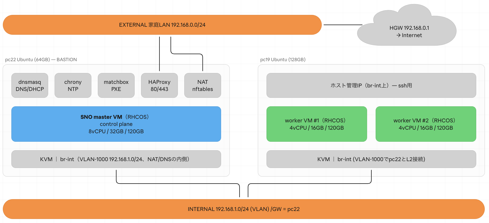

📗 2. BASTION環境構築とRHCOSインストール¶
2026/11/22公開 2026/11/22更新
🟩 コンフィギュレーション¶
BASTIONはOpenShift以外の色々な機能を実現する。専用のVMを立てることもあるが、母艦（ベアメタル）内に設定する。
各VMはPXEブートが設定されていて、初期起動時、RHCOSがインストールされる。2回目以降は、インストールされたRHCOSで立ち上がる
PXEプロトコルはDNSMASQとMATCHBOXの連携で実現される。使用するプロトコルはBOOTP 、DHCP、TFTP、HTTP
BOOTPやDHCPプロトコルは到達力が弱い。地理的に遠いVMはPXEブートに別途カラクリが必要、今回は家庭内LANなので問題ない。
TFTPはバイナリを転送する。大きなバイナリ転送はHTTPを使う。

🟨 VM一覧¶
作成するVMは下表の3個。WORKERは後で増えるかもしれない。
VM名 |
OS |
vCPU数 |
メモリサイズ |
ディスクサイズ |
備考 |
|---|---|---|---|---|---|
MASTER |
RHCOS |
8 |
32GB |
120GB |
control plane |
WORKER1 |
RHCOS |
4 |
16GB |
120GB |
worker |
WORKER2 |
RHCOS |
4 |
16GB |
120GB |
worker |
MASTER内のworker構築は予定してない。WORKER1/2のリソースは十分あるので、そちらを使う予定。
🟨 DNS情報¶
FQDN |
IP |
MAC |
備考 |
|---|---|---|---|
pc22.home.arpa |
192.168.0.122 |
- |
BASTION (EXTERNAL) |
*.apps.sno.home.arpa |
192.168.0.122 |
- |
|
api.sno.home.arpa |
192.168.1.20 |
- |
|
api-int.sno.home.arpa |
192.168.1.20 |
- |
|
master.sno.home.arpa |
192.168.1.20 |
52:54:00:01:01:00 |
MASTER |
worker1.sno.home.arpa |
192.168.1.21 |
52:54:00:01:01:01 |
WORKER1 |
worker2.sno.home.arpa |
192.168.1.22 |
52:54:00:01:01:02 |
WORKER2 |
bastion.sno.home.arpa |
192.168.1.122 |
- |
BASTION (INTERNAL) |
🟨 NETWORK情報¶
FQDN |
EXTERNAL IP |
INTERNAL IP |
Default GW |
備考 |
|---|---|---|---|---|
pc22.home.arpa |
192.168.0.122 |
192.168.1.122 |
192.168.0.1 |
BASTION, MASTER |
pc19.home.arpa |
- |
192.168.1.119 |
192.168.1.122 |
WORKER |
INTERNALへの経路情報が必要なクライアント等はクライアント内部に設定する。
🟨 BASTION用リソース¶
項目 |
値 |
備考 |
|---|---|---|
OS |
Ubuntu 22.04 |
|
vCPU数 |
4 |
母艦の総数12から、MASTER割り当て分の8を引いた値 |
メモリサイズ |
32GB |
母艦の総容量64GBから、MASTER割り当て分の32GBを引いた値 |
ディスクサイズ |
> 500GB |
母艦の総容量は1000GB、LVMS用に1000GBのディスク追加可能※ |
※ WORKER側でLVMSを確保するときは、pc19内のディスクリソースを切り出す。
🟨 BASTIONサービス¶
サービス |
実現方式 |
備考 |
|---|---|---|
DHCP |
dnsmasq |
DHCPはINTERNAL側のみ有効 |
DNS |
dnsmasq |
INTERNAL/EXTERNAL双方にDNSサービスを提供。※ |
NTP |
chrony |
|
PXE |
matchbox |
|
HAProxy |
haproxy |
80/443を192.168.1.20/.21/.22へ転送。pc19にWORKERがないときも考慮 |
NAT |
nftables |
INTERNALからinternetにアクセスできるようにする |
HTTP |
nginx |
|
TFTP |
dnsmasq |
|
NFS |
不要 |
SNOのPVサービスにはLVMS Operatorが定番 |
※ EXTERNAL側の外部クライアントからこのDNSサービスを利用するときは、/etc/resolver/home.arpaに nameserver 192.168.0.122 の行を追加する。